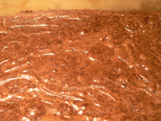

The brownie files
The brownie files

You’re all tired of hearing about my brownies, but here you are reading about them yet again! I’ve decided that I just don’t like brownies. I like to bake them, but I cannot enjoy them. I don’t even like licking the batter off of the spatula now, which is something I lived for as a kid. When I think back on all of the brownies I liked, I realize that they were all years ago. In fact, the last time I truly appreciated a brownie was probably sophomore year of college, when I learned to make Ghirardelli brownies from the box, and that may have just been for the novelty of making them myself.
Mom (happy birthday!) used to make some fabulous brownies with cream cheese swirling through them, and I’ve kind of had those on the brain lately. Mom, where is that recipe? I need something salty or tangy or otherwise not totally sweet to distract me. As I put the batter together for these, I kept thinking that they’d taste of little other than chocolate and butter. But even with three times as much chocolate as the Mark Bittman brownies I made a few weeks ago, I still couldn’t focus on it. These also have fifty percent more sugar in them; maybe that’s the problem? Can I just cut back on sugar and increase chocolate? Can I replace white sugar with brown sugar? Or should I just make Nigella’s dense chocolate cake when I need a fix?
Carly pointed me to an Ina Garten recipe that calls for a hilarious pound of butter and a couple pounds of various chocolate products. I can’t afford to make those! And Mom mentions a Cook’s Illustrated recipe with cocoa powder in it. That one will be next, and if I don’t gobble them up, I’m off brownies until I have kids.
By the way, New York readers: the annual James Beard Foundation cookbook and culinary tag sale (that’s a pdf) is this Saturday at 10 a.m. Barletta and I will be there—will you?
Comments
Did I fail to mention that the Ina Garten recipe was on the richer end of the spectrum? (apparently both calorically and monetarily). And while there was a time when a pound of butter would have made me cringe, I now spend my weekends up to my eyeballs in buttercream. They are really, really good brownies though. Cut the recipe in half and give them a go! And you can’t give up on brownies. We do make a lovely brownie cupcake with cream frosting…there is one just waiting for your arrival!
Once upon a time I found that I didn’t like brownies, too.
You know what you might like? My mom makes a not very sweet poured chocolate cookie bar over a not very sweet oatmeal cookie crust. Most children don’t like them.
Add a comment